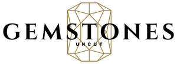

Trade Mark Journal No.2025/044 31 October 2025
UK00004251453 19 August 2025 (14,21,36,40,42)

- Class 14
- Precious metals and imitations thereof; Jewellery in semi-precious metals; Jewellery in precious metals; Jewellery of precious metals; Ornaments, made of or coated with precious or semi-precious metals; Jewellery in non precious metals; Statues and figurines, made of or coated with precious or semi precious metals; Charms [jewellery] of common metals; Cases of precious metals for jewels; Jewellery being articles of precious metals; Jewellery coated with precious metals; Statuettes made of semi-precious metals; Jewellery plated with precious metals; Jewelry charms in precious metals or coated therewith; Jewelry boxes of precious metals; Platinum jewelry; Chain mesh of semi-precious metals; Chain mesh of precious metals [jewellery]; Jewellery boxes of precious metals; Jewellery fashioned of precious metals; Gold jewellery; Jewellery made of precious metals; Articles of jewellery coated with precious metals; Jewellery fashioned from non-precious metals; Lapel pins of precious metals [jewellery]; Jewellery chain of precious metal for necklaces; Chains made of precious metals [jewellery]; Gold necklaces; Articles of jewellery made of precious metals; Jewellery chain of precious metal for bracelets; Threads of precious metal [jewellery, jewelry (Am.)]; Identification bracelets of precious metal [jewelry]; Jewellery made of plated precious metals; Wire of precious metal [jewellery, jewelry (Am.)]; Gold earrings; Plastic bracelets in the nature of jewelry; Earrings of precious metal; Jewelry cases of precious metal; Jewellery chain of precious metal for anklets; Holiday ornaments [figurines] of precious metal, other than tree ornaments; Ornaments [statues] made of precious metal; Hat ornaments of precious metal; Ornaments (Hat -) of precious metal; Ornaments for clothing [of precious metal]; Clothing ornaments of precious metals; Shoe ornaments of precious metal; Ornaments (Shoe -) of precious metal; Model figures [ornaments] made of precious metal; Model animals [ornaments] made of precious metal; Personal ornaments of precious metal; Model figures [ornaments] coated with precious metal; Scale models [ornaments] of precious metal; Model animals [ornaments] coated with precious metal; Ornamental figurines made of precious metal; Figurines [statuettes] of precious metal; Ornamental sculptures made of precious metal; Figurines of precious metal; Jewelry boxes of precious metal; Wall decorations of precious metal; Adhesive wall decorations of precious metal; Small jewellery boxes of precious metals; Jewellery containing gold.
- Class 21
- Ceramic ornaments; Glass ornaments; China ornaments; Decorative objects [ornaments] made of glass; Ornaments made of porcelain; Ornaments [statues] made of porcelain; Aquarium ornaments; Ornaments made of glass; Ornaments [statues] made of china; Ornaments made of ceramics; Decorative sand bottles; Ornaments made of earthenware; Ornamental figurines made of glass; Ornaments made of china; Powdered glass for decoration; Figurines made of decorative glass; Oil cruets of precious metal; Porcelain cake decorations; Decorative glass spheres; Glass vases; Figurines of glass; Glass tableware; Ornamental glass spheres; Hand cut crystal glassware; Semi-worked glass beads; Ice cube molds; Artworks of glass; Statues, figurines, plaques and works of art, made of materials such as porcelain, terra-cotta or glass, included in the class; Art objects of glass.
- Class 36
- Valuation of diamonds, precious stones and precious metals; Precious and semi-precious stone appraisal.
- Class 40
- Polishing of gemstones; Cutting of gemstones; Polishing of diamonds and other precious stones; Processing and cutting of diamonds and other precious stones; Polishing of diamonds; Polishing of gems.
- Class 42
- Authenticating semi-precious gemstones; Authenticating gemstones; Grading of precious stones.
Gemstones Uncut LTD